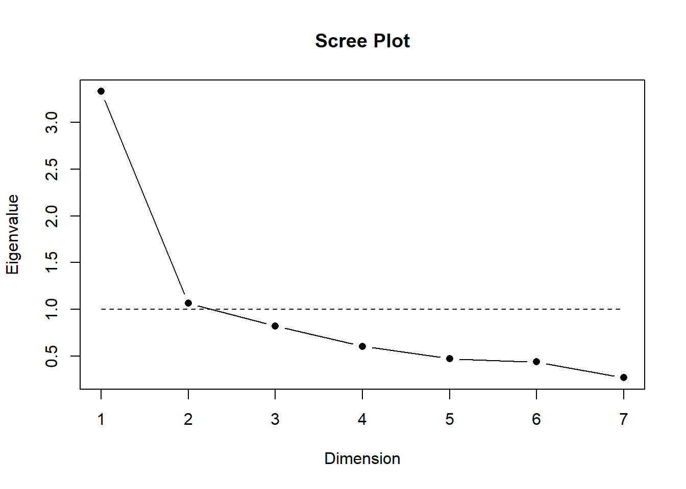
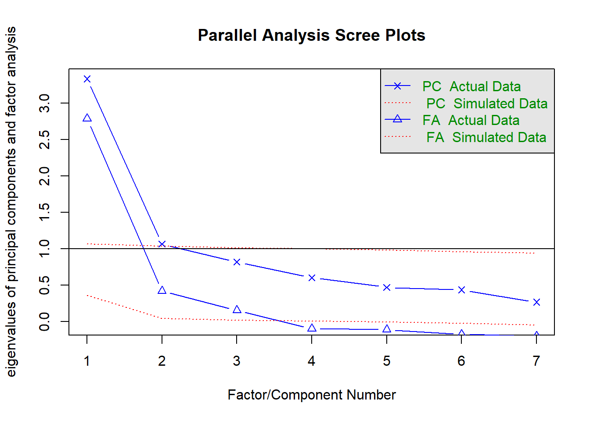

Para el taller práctico de hoy utilizaremos la base de datos del Estudio Longitudinal Social de Chile, realizado por el Centro de estudios del conflicto y la cohesión social COES.
El Estudio Longitudinal Social del Chile ELSOC, único en Chile y América Latina, consiste en encuestar a casi 3.000 chilenos, anualmente, a lo largo de una década. ELSOC ha sido diseñado para evaluar la manera cómo piensan, sienten y se comportan los chilenos en torno a un conjunto de temas referidos al conflicto y la cohesión social en Chile. La población objetivo son hombres y mujeres entre 15 y 75 años de edad, tiene una representación de la población nacional urbana, donde se obtuvo una muestra original de 2927 casos en el año 2016 y mantiene 1728 en 2022, además de una muestra de refresco en 2018.
Objetivo general
El objetivo de este ejercicio práctico es comprender y estimar un análisis factorial exploratorio con el fin de reducir la dimensionalidad de una batería de variables.
Cargar paquetes
Código
pacman::p_load(tidyverse, #Conjunto de paquetes, sobre todo dplyr y ggplot2 car, #Para recodificar haven, summarytools, #Para descriptivos sjmisc, psych, # para Alfa de Chronbach sjPlot, psy, # scree plot function nFactors, # parallel GPArotation, # Rotación sjlabelled)options(scipen =999) # para desactivar notacion cientificarm(list =ls()) # para limpiar el entorno de trabajo
Cargar base de datos
Código
load(url("https://dataverse.harvard.edu/api/access/datafile/7245118")) #Cargar base de datos
Visualización de datos
Código
dim(elsoc_long_2016_2022.2)
[1] 18035 750
Debido a la naturaleza longitudinal de ELSOC, la base de datos contiene 18035 casos (las mismas personas durante 6 años) y 750 variables (las mismas variables en 6 periodos distintos). Por lo tanto, para simplificar el proceso de análisis de este práctico trabajaremos solo con los casos y variables de quienes participaron en la cuarta ola (2019)
Datos y variables
Para estimar AFE, utilizaremos específicamente el módulo de Ciudadanía. De este módulo utilizaremos un concepto en particular llamado Confianza en instituciones con los ítems:
Grado de confianza: El Gobierno
Grado de confianza: Los Partidos políticos
Grado de confianza: Carabineros
Grado de confianza: Los sindicatos
Grado de confianza: Las empresas privadas
Grado de confianza: El congreso nacional
Grado de confianza: El presidente de la república
La idea general es ver si esque todas estas variables miden algún tipo de confianza o si esque existen dimensiones subyacentes.
Asimismo, vamos a utilizar los promedios y/o puntajes de estas variables para ver cómo influyen en la Satisfacción con la democracia en Chile
Filtrar base de datos
Filtraremos la base de datos para quedarnos con las observaciones correspondientes solamente a la ola 4, y además seleccionaremos los ítems de interés.
Código
data <- elsoc_long_2016_2022.2%>%filter(ola==4) %>%# seleccionamos solo los casos de la ola 1select(satis_dem = c01,conf_gob = c05_01,conf_part = c05_02,conf_carab = c05_03,conf_sind = c05_04,conf_empre = c05_06,conf_cong = c05_07,conf_pres = c05_08, )
Estos ítems cuentan con las mismas categorías de respuesta: (1) Nada, a (5) Mucho. Además de los valores codificados como -888 y -999.
Recodificar
Recodificamos los valores -888 y -999 en NA y eliminamos los NAs.
data <-cbind(data, "conf_inst"=rowMeans(data %>% dplyr::select(conf_gob:conf_carab, conf_empre:conf_pres), na.rm=TRUE))summary(data$conf_inst)
Min. 1st Qu. Median Mean 3rd Qu. Max. NA's
1.000 1.167 1.500 1.700 2.167 5.000 6
Análisis factorial exploratorio
¿Qué se puede deducir de la matriz de correlaciones en relación a la estructura subyacente en términos de variables latentes? No hay claridad de grupos de indicadores asociados entre sí.
Test de adecuación de matriz para AFE
KMO (Kaiser, Meyer, Olkin Measure of Sampling Adequacy):
Varía entre 0 y 1. Contrasta si las correlaciones parciales entre las variables son pequeñas
Valores pequeños (menores a 0.5) indican que los datos no serían adecuados para AFE, ya que las correlaciones entre pares de variables no pueden ser explicadas por otras variables.
Código
corMat <- data %>%select(conf_gob:conf_pres) %>%cor(use ="complete.obs") # estimar matriz pearsonKMO(corMat)
En este caso las correlaciones son altas, por lo que los datos sí son adecuados para AFE.
Nivel de correlaciones de la matriz: test de esfericidad de Barlett
Se utiliza para evluar la hipótesis que la matriz de correlaciones es una matriz identidad (diagonal=1 y bajo la diagonal=0)
Se busca significación (p < 0.05) ya que se espera que las variables estén correlacionadas
Código
cortest.bartlett(corMat, n =3417)
$chisq
[1] 7942.816
$p.value
[1] 0
$df
[1] 21
En este caso el valor p es 0, así que hay significación estadística
Selección de número de factores
Código
data %>%select(conf_gob:conf_pres) %>%scree.plot()

Código
fa.parallel(corMat, n.obs=3417)

Parallel analysis suggests that the number of factors = 3 and the number of components = 2
Extracción
ejes principales
Código
fac_pa <- data %>%select(conf_gob:conf_pres) %>%fa(nfactors =3, fm="pa")#summary(fac_pa)fac_pa
Factor Analysis using method = pa
Call: fa(r = ., nfactors = 3, fm = "pa")
Standardized loadings (pattern matrix) based upon correlation matrix
PA1 PA2 PA3 h2 u2 com
conf_gob 0.77 0.14 0.00 0.72 0.28 1.1
conf_part 0.07 0.72 -0.04 0.55 0.45 1.0
conf_carab 0.52 -0.13 0.32 0.45 0.55 1.8
conf_sind -0.19 0.29 0.42 0.27 0.73 2.2
conf_empre 0.14 0.07 0.59 0.50 0.50 1.1
conf_cong 0.12 0.53 0.23 0.55 0.45 1.5
conf_pres 0.87 0.00 -0.02 0.74 0.26 1.0
PA1 PA2 PA3
SS loadings 1.84 1.08 0.87
Proportion Var 0.26 0.15 0.12
Cumulative Var 0.26 0.42 0.54
Proportion Explained 0.48 0.29 0.23
Cumulative Proportion 0.48 0.77 1.00
With factor correlations of
PA1 PA2 PA3
PA1 1.00 0.51 0.48
PA2 0.51 1.00 0.44
PA3 0.48 0.44 1.00
Mean item complexity = 1.4
Test of the hypothesis that 3 factors are sufficient.
df null model = 21 with the objective function = 2.3 with Chi Square = 7858.1
df of the model are 3 and the objective function was 0.01
The root mean square of the residuals (RMSR) is 0.01
The df corrected root mean square of the residuals is 0.03
The harmonic n.obs is 3337 with the empirical chi square 12.76 with prob < 0.0052
The total n.obs was 3417 with Likelihood Chi Square = 39.13 with prob < 0.000000016
Tucker Lewis Index of factoring reliability = 0.968
RMSEA index = 0.059 and the 90 % confidence intervals are 0.044 0.077
BIC = 14.72
Fit based upon off diagonal values = 1
Measures of factor score adequacy
PA1 PA2 PA3
Correlation of (regression) scores with factors 0.93 0.84 0.79
Multiple R square of scores with factors 0.86 0.71 0.62
Minimum correlation of possible factor scores 0.72 0.43 0.25
Maximum likelihood
Maximiza la posibilidad de que los parámetros reproduzcan los datos observados
Código
fac_ml <- data %>%select(conf_gob:conf_pres) %>%fa(nfactors =3, fm="ml")fac_ml
Factor Analysis using method = ml
Call: fa(r = ., nfactors = 3, fm = "ml")
Standardized loadings (pattern matrix) based upon correlation matrix
ML1 ML2 ML3 h2 u2 com
conf_gob 0.77 0.13 0.02 0.72 0.28 1.1
conf_part 0.05 0.78 -0.01 0.64 0.36 1.0
conf_carab 0.51 -0.12 0.29 0.43 0.57 1.7
conf_sind -0.19 0.24 0.46 0.27 0.73 1.9
conf_empre 0.11 0.00 0.66 0.53 0.47 1.1
conf_cong 0.14 0.44 0.30 0.52 0.48 2.0
conf_pres 0.88 -0.01 -0.03 0.75 0.25 1.0
ML1 ML2 ML3
SS loadings 1.83 1.02 1.00
Proportion Var 0.26 0.15 0.14
Cumulative Var 0.26 0.41 0.55
Proportion Explained 0.47 0.27 0.26
Cumulative Proportion 0.47 0.74 1.00
With factor correlations of
ML1 ML2 ML3
ML1 1.00 0.48 0.52
ML2 0.48 1.00 0.45
ML3 0.52 0.45 1.00
Mean item complexity = 1.4
Test of the hypothesis that 3 factors are sufficient.
df null model = 21 with the objective function = 2.3 with Chi Square = 7858.1
df of the model are 3 and the objective function was 0.01
The root mean square of the residuals (RMSR) is 0.01
The df corrected root mean square of the residuals is 0.03
The harmonic n.obs is 3337 with the empirical chi square 14.35 with prob < 0.0025
The total n.obs was 3417 with Likelihood Chi Square = 35.46 with prob < 0.000000097
Tucker Lewis Index of factoring reliability = 0.971
RMSEA index = 0.056 and the 90 % confidence intervals are 0.041 0.074
BIC = 11.05
Fit based upon off diagonal values = 1
Measures of factor score adequacy
ML1 ML2 ML3
Correlation of (regression) scores with factors 0.93 0.85 0.82
Multiple R square of scores with factors 0.86 0.73 0.67
Minimum correlation of possible factor scores 0.72 0.45 0.34
Rotación
Varimax (ortogonal)
Código
fac_ml_var <- data %>%select(conf_gob:conf_pres) %>%fa(nfactors =3, fm="ml", rotate="varimax") # ortogonalfac_ml_var
Factor Analysis using method = ml
Call: fa(r = ., nfactors = 3, rotate = "varimax", fm = "ml")
Standardized loadings (pattern matrix) based upon correlation matrix
ML1 ML2 ML3 h2 u2 com
conf_gob 0.76 0.32 0.17 0.72 0.28 1.4
conf_part 0.21 0.74 0.22 0.64 0.36 1.3
conf_carab 0.57 0.05 0.31 0.43 0.57 1.6
conf_sind 0.04 0.23 0.46 0.27 0.73 1.5
conf_empre 0.35 0.11 0.63 0.53 0.47 1.6
conf_cong 0.34 0.48 0.42 0.52 0.48 2.8
conf_pres 0.83 0.22 0.10 0.75 0.25 1.2
ML1 ML2 ML3
SS loadings 1.89 1.00 0.97
Proportion Var 0.27 0.14 0.14
Cumulative Var 0.27 0.41 0.55
Proportion Explained 0.49 0.26 0.25
Cumulative Proportion 0.49 0.75 1.00
Mean item complexity = 1.6
Test of the hypothesis that 3 factors are sufficient.
df null model = 21 with the objective function = 2.3 with Chi Square = 7858.1
df of the model are 3 and the objective function was 0.01
The root mean square of the residuals (RMSR) is 0.01
The df corrected root mean square of the residuals is 0.03
The harmonic n.obs is 3337 with the empirical chi square 14.35 with prob < 0.0025
The total n.obs was 3417 with Likelihood Chi Square = 35.46 with prob < 0.000000097
Tucker Lewis Index of factoring reliability = 0.971
RMSEA index = 0.056 and the 90 % confidence intervals are 0.041 0.074
BIC = 11.05
Fit based upon off diagonal values = 1
Measures of factor score adequacy
ML1 ML2 ML3
Correlation of (regression) scores with factors 0.89 0.78 0.73
Multiple R square of scores with factors 0.79 0.61 0.54
Minimum correlation of possible factor scores 0.59 0.21 0.07
Promax (oblicua)
Código
fac_ml_pro <- data %>%select(conf_gob:conf_pres) %>%fa(nfactors =3, fm="ml", rotate="promax")fac_ml_pro
Factor Analysis using method = ml
Call: fa(r = ., nfactors = 3, rotate = "promax", fm = "ml")
Standardized loadings (pattern matrix) based upon correlation matrix
ML1 ML2 ML3 h2 u2 com
conf_gob 0.80 0.19 -0.09 0.72 0.28 1.1
conf_part 0.03 0.78 0.01 0.64 0.36 1.0
conf_carab 0.57 -0.14 0.23 0.43 0.57 1.4
conf_sind -0.15 0.13 0.51 0.27 0.73 1.3
conf_empre 0.19 -0.12 0.67 0.53 0.47 1.2
conf_cong 0.17 0.39 0.30 0.52 0.48 2.3
conf_pres 0.91 0.07 -0.16 0.75 0.25 1.1
ML1 ML2 ML3
SS loadings 1.98 0.96 0.92
Proportion Var 0.28 0.14 0.13
Cumulative Var 0.28 0.42 0.55
Proportion Explained 0.51 0.25 0.24
Cumulative Proportion 0.51 0.76 1.00
With factor correlations of
ML1 ML2 ML3
ML1 1.00 0.48 0.57
ML2 0.48 1.00 0.56
ML3 0.57 0.56 1.00
Mean item complexity = 1.4
Test of the hypothesis that 3 factors are sufficient.
df null model = 21 with the objective function = 2.3 with Chi Square = 7858.1
df of the model are 3 and the objective function was 0.01
The root mean square of the residuals (RMSR) is 0.01
The df corrected root mean square of the residuals is 0.03
The harmonic n.obs is 3337 with the empirical chi square 14.35 with prob < 0.0025
The total n.obs was 3417 with Likelihood Chi Square = 35.46 with prob < 0.000000097
Tucker Lewis Index of factoring reliability = 0.971
RMSEA index = 0.056 and the 90 % confidence intervals are 0.041 0.074
BIC = 11.05
Fit based upon off diagonal values = 1
Measures of factor score adequacy
ML1 ML2 ML3
Correlation of (regression) scores with factors 0.93 0.85 0.83
Multiple R square of scores with factors 0.87 0.72 0.69
Minimum correlation of possible factor scores 0.74 0.45 0.38
Casi automático con sjPlot
Código
data %>%select(conf_gob:conf_pres) %>% sjPlot::tab_fa(method ="ml", rotation ="promax", show.comm =TRUE, title ="Análisis factorial de confianza en instituciones")
Parallel analysis suggests that the number of factors = 3 and the number of components = NA
Análisis factorial de confianza en instituciones
Factor 1
Factor 2
Factor 3
Communality
Grado de confianza: El Gobierno
0.80
0.19
-0.09
0.72
Grado de confianza: Los Partidos
Politicos
0.03
0.78
0.01
0.64
Grado de confianza: Carabineros
0.57
-0.14
0.23
0.43
Grado de confianza: Los Sindicatos
-0.15
0.13
0.51
0.27
Grado de confianza: Las Empresas
Privadas
0.19
-0.12
0.67
0.53
Grado de confianza: El Congreso Nacional
0.17
0.39
0.30
0.52
Grado de confianza: El Presidente/a de
la Republica
0.91
0.07
-0.16
0.75
Total Communalities
3.85
Cronbach's α
0.78
0.67
0.48
Luego de realizar el Análisis factorial exploratorio existen varias alternativas sobre los pasos a seguir. Por ejemplo, es posible estimar un promedio simple entre cada una de las variables de los factores. Otra opción es estimar puntajes factoriales.
Factor Analysis using method = ml
Call: fa(r = ., nfactors = 3, rotate = "promax", scores = "regression",
fm = "ml")
Standardized loadings (pattern matrix) based upon correlation matrix
ML1 ML2 ML3 h2 u2 com
conf_gob 0.80 0.19 -0.09 0.72 0.28 1.1
conf_part 0.03 0.78 0.01 0.64 0.36 1.0
conf_carab 0.57 -0.14 0.23 0.43 0.57 1.4
conf_sind -0.15 0.13 0.51 0.27 0.73 1.3
conf_empre 0.19 -0.12 0.67 0.53 0.47 1.2
conf_cong 0.17 0.39 0.30 0.52 0.48 2.3
conf_pres 0.91 0.07 -0.16 0.75 0.25 1.1
ML1 ML2 ML3
SS loadings 1.98 0.96 0.92
Proportion Var 0.28 0.14 0.13
Cumulative Var 0.28 0.42 0.55
Proportion Explained 0.51 0.25 0.24
Cumulative Proportion 0.51 0.76 1.00
With factor correlations of
ML1 ML2 ML3
ML1 1.00 0.48 0.57
ML2 0.48 1.00 0.56
ML3 0.57 0.56 1.00
Mean item complexity = 1.4
Test of the hypothesis that 3 factors are sufficient.
df null model = 21 with the objective function = 2.3 with Chi Square = 7858.1
df of the model are 3 and the objective function was 0.01
The root mean square of the residuals (RMSR) is 0.01
The df corrected root mean square of the residuals is 0.03
The harmonic n.obs is 3337 with the empirical chi square 14.35 with prob < 0.0025
The total n.obs was 3417 with Likelihood Chi Square = 35.46 with prob < 0.000000097
Tucker Lewis Index of factoring reliability = 0.971
RMSEA index = 0.056 and the 90 % confidence intervals are 0.041 0.074
BIC = 11.05
Fit based upon off diagonal values = 1
Measures of factor score adequacy
ML1 ML2 ML3
Correlation of (regression) scores with factors 0.93 0.85 0.83
Multiple R square of scores with factors 0.87 0.72 0.69
Minimum correlation of possible factor scores 0.74 0.45 0.38
Código
data <-cbind(data, fac_ml$scores)
Código
data %>%select(conf_inst, ML1, ML2, ML3) %>%head(10)
---title: "Práctico 7. AFE y puntajes factoriales"subtitle: "Estadística IV"linktitle: "Práctico 7: AFE"date: "2024-10-16"lang: es---# Análisis factorial exploratorio (AFE)## PresentaciónPara el taller práctico de hoy utilizaremos la base de datos del Estudio Longitudinal Social de Chile, realizado por el Centro de estudios del conflicto y la cohesión social [COES](https://coes.cl/).El Estudio Longitudinal Social del Chile [ELSOC](https://coes.cl/encuesta-panel/), único en Chile y América Latina, consiste en encuestar a casi 3.000 chilenos, anualmente, a lo largo de una década. ELSOC ha sido diseñado para evaluar la manera cómo piensan, sienten y se comportan los chilenos en torno a un conjunto de temas referidos al conflicto y la cohesión social en Chile. La población objetivo son hombres y mujeres entre 15 y 75 años de edad, tiene una representación de la población nacional urbana, donde se obtuvo una muestra original de **2927** casos en el año 2016 y mantiene **1728** en 2022, además de una muestra de refresco en 2018.## Objetivo generalEl objetivo de este ejercicio práctico es comprender y estimar un análisis factorial exploratorio con el fin de reducir la dimensionalidad de una batería de variables.## Cargar paquetes```{r}pacman::p_load(tidyverse, #Conjunto de paquetes, sobre todo dplyr y ggplot2 car, #Para recodificar haven, summarytools, #Para descriptivos sjmisc, psych, # para Alfa de Chronbach sjPlot, psy, # scree plot function nFactors, # parallel GPArotation, # Rotación sjlabelled)options(scipen =999) # para desactivar notacion cientificarm(list =ls()) # para limpiar el entorno de trabajo```### Cargar base de datos```{r }load(url("https://dataverse.harvard.edu/api/access/datafile/7245118")) #Cargar base de datos```### Visualización de datos```{r}dim(elsoc_long_2016_2022.2)```Debido a la naturaleza longitudinal de ELSOC, la base de datos contiene 18035 casos (las mismas personas durante 6 años) y 750 variables (las mismas variables en 6 periodos distintos). Por lo tanto, para simplificar el proceso de análisis de este práctico trabajaremos solo con los casos y variables de quienes participaron en la cuarta ola (2019)## Datos y variablesPara estimar AFE, utilizaremos específicamente el módulo de **Ciudadanía**. De este módulo utilizaremos un concepto en particular llamado *Confianza en instituciones* con los ítems:- Grado de confianza: El Gobierno- Grado de confianza: Los Partidos políticos- Grado de confianza: Carabineros- Grado de confianza: Los sindicatos- Grado de confianza: Las empresas privadas- Grado de confianza: El congreso nacional- Grado de confianza: El presidente de la repúblicaLa idea general es ver si esque todas estas variables miden algún tipo de *confianza* o si esque existen dimensiones subyacentes.Asimismo, vamos a utilizar los promedios y/o puntajes de estas variables para ver cómo influyen en la Satisfacción con la democracia en Chile## Filtrar base de datosFiltraremos la base de datos para quedarnos con las observaciones correspondientes solamente a la ola 4, y además seleccionaremos los ítems de interés.```{r}data <- elsoc_long_2016_2022.2%>%filter(ola==4) %>%# seleccionamos solo los casos de la ola 1select(satis_dem = c01,conf_gob = c05_01,conf_part = c05_02,conf_carab = c05_03,conf_sind = c05_04,conf_empre = c05_06,conf_cong = c05_07,conf_pres = c05_08, )```Estos ítems cuentan con las mismas categorías de respuesta: (1) Nada, a (5) Mucho. Además de los valores codificados como -888 y -999.### RecodificarRecodificamos los valores -888 y -999 en NA y eliminamos los NAs.```{r, message=FALSE, warning=FALSE}data$satis_dem <- car::recode(data$satis_dem, "c(-999,-888)=NA")data$conf_gob <- car::recode(data$conf_gob, "c(-999,-888)=NA")data$conf_part <- car::recode(data$conf_part, "c(-999,-888)=NA")data$conf_carab <- car::recode(data$conf_carab, "c(-999,-888)=NA")data$conf_sind <- car::recode(data$conf_sind, "c(-999,-888)=NA")data$conf_empre <- car::recode(data$conf_empre, "c(-999,-888)=NA")data$conf_cong <- car::recode(data$conf_cong, "c(-999,-888)=NA")data$conf_pres <- car::recode(data$conf_pres, "c(-999,-888)=NA")data$conf_gob <-set_labels(data$conf_gob,labels=c( "Nada"=1,"Poca"=2,"Algo"=3,"Bastante"=4,"Mucha"=5))data$conf_part <-set_labels(data$conf_part,labels=c( "Nada"=1,"Poca"=2,"Algo"=3,"Bastante"=4,"Mucha"=5))data$conf_carab <-set_labels(data$conf_carab,labels=c( "Nada"=1,"Poca"=2,"Algo"=3,"Bastante"=4,"Mucha"=5))data$conf_sind <-set_labels(data$conf_sind,labels=c( "Nada"=1,"Poca"=2,"Algo"=3,"Bastante"=4,"Mucha"=5))data$conf_empre <-set_labels(data$conf_empre,labels=c( "Nada"=1,"Poca"=2,"Algo"=3,"Bastante"=4,"Mucha"=5))data$conf_cong <-set_labels(data$conf_cong,labels=c( "Nada"=1,"Poca"=2,"Algo"=3,"Bastante"=4,"Mucha"=5))data$conf_pres <-set_labels(data$conf_pres,labels=c( "Nada"=1,"Poca"=2,"Algo"=3,"Bastante"=4,"Mucha"=5))```## Análisis```{r}data %>%select(conf_gob:conf_pres) %>%plot_stackfrq() +theme(legend.position="bottom")```### Estimar correlación```{r}data %>%select(conf_gob:conf_pres) %>%tab_corr(triangle ="lower")```Podemos observar que todas las correlaciones son positivas, por lo que no quedaron ítems invertidos.```{r}data %>%select(conf_gob:conf_pres) %>% psych::alpha()```Si sacamos conf_sind el alpha sube a 0.8```{r}data %>%select(conf_gob:conf_carab, conf_empre:conf_pres) %>% psych::alpha()``````{r}data <-cbind(data, "conf_inst"=rowMeans(data %>% dplyr::select(conf_gob:conf_carab, conf_empre:conf_pres), na.rm=TRUE))summary(data$conf_inst)```## Análisis factorial exploratorio¿Qué se puede deducir de la matriz de correlaciones en relación a la estructura subyacente en términos de variables latentes? No hay claridad de grupos de indicadores asociados entre sí.### Test de adecuación de matriz para AFEKMO (Kaiser, Meyer, Olkin Measure of Sampling Adequacy):* Varía entre 0 y 1. Contrasta si las correlaciones parciales entre las variables son pequeñas* Valores pequeños (menores a 0.5) indican que los datos no serían adecuados para AFE, ya que las correlaciones entre pares de variables no pueden ser explicadas por otras variables.```{r}corMat <- data %>%select(conf_gob:conf_pres) %>%cor(use ="complete.obs") # estimar matriz pearsonKMO(corMat)```En este caso las correlaciones son altas, por lo que los datos sí son adecuados para AFE.### Nivel de correlaciones de la matriz: test de esfericidad de BarlettSe utiliza para evluar la hipótesis que la matriz de correlaciones es una matriz identidad (diagonal=1 y bajo la diagonal=0)* Se busca significación (p < 0.05) ya que se espera que las variables estén correlacionadas```{r}cortest.bartlett(corMat, n =3417)```En este caso el valor p es 0, así que hay significación estadística### Selección de número de factores```{r}data %>%select(conf_gob:conf_pres) %>%scree.plot()``````{r}fa.parallel(corMat, n.obs=3417)```### Extracción- ejes principales```{r}fac_pa <- data %>%select(conf_gob:conf_pres) %>%fa(nfactors =3, fm="pa")#summary(fac_pa)fac_pa```- Maximum likelihoodMaximiza la posibilidad de que los parámetros reproduzcan los datos observados```{r}fac_ml <- data %>%select(conf_gob:conf_pres) %>%fa(nfactors =3, fm="ml")fac_ml```### Rotación- Varimax (ortogonal)```{r}fac_ml_var <- data %>%select(conf_gob:conf_pres) %>%fa(nfactors =3, fm="ml", rotate="varimax") # ortogonalfac_ml_var```- Promax (oblicua)```{r}fac_ml_pro <- data %>%select(conf_gob:conf_pres) %>%fa(nfactors =3, fm="ml", rotate="promax")fac_ml_pro```### Casi automático con sjPlot```{r}data %>%select(conf_gob:conf_pres) %>% sjPlot::tab_fa(method ="ml", rotation ="promax", show.comm =TRUE, title ="Análisis factorial de confianza en instituciones")```Luego de realizar el Análisis factorial exploratorio existen varias alternativas sobre los pasos a seguir. Por ejemplo, es posible estimar un promedio simple entre cada una de las variables de los factores. Otra opción es estimar **puntajes factoriales**.### Puntajes factoriales```{r}fac_ml <- data %>%select(conf_gob:conf_pres) %>%fa(nfactors =3, fm="ml", rotate ="promax", scores ="regression")fac_ml``````{r}data <-cbind(data, fac_ml$scores)``````{r}data %>%select(conf_inst, ML1, ML2, ML3) %>%head(10)```Factor 1```{r}summary(data$ML1)```Factor 2```{r}summary(data$ML2)```Factor 3```{r}summary(data$ML3)```### Renombramos los factores para darle más sentido a la interpretación```{r}data<- data %>%rename(inst_ejecutivo=ML1,inst_partidos=ML2,inst_trabajo=ML3)```### Ahora probar cada uno de estos puntajes en un modelo de regresión```{r}data<-na.omit(data)reg1 <-lm(satis_dem~conf_inst, data=data)reg2 <-lm(satis_dem~inst_ejecutivo, data=data)reg3 <-lm(satis_dem~inst_partidos, data=data)reg4 <-lm(satis_dem~inst_trabajo, data=data)reg5 <-lm(satis_dem~inst_ejecutivo+inst_partidos+inst_trabajo, data=data)``````{r results='asis'}texreg::knitreg(list(reg1, reg2, reg3, reg4, reg5))```